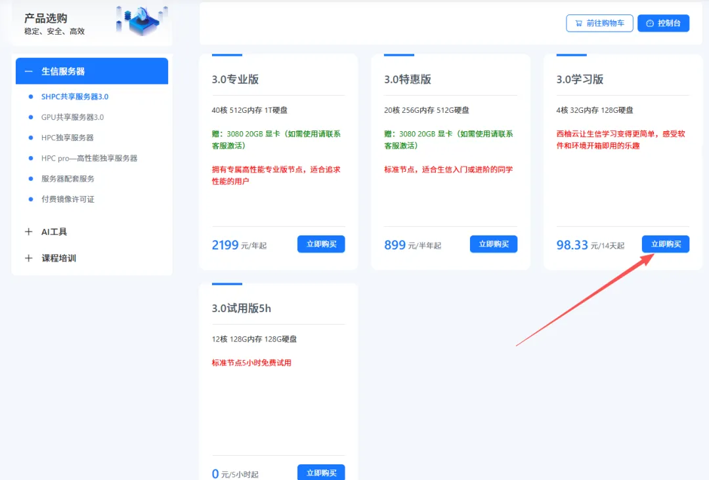
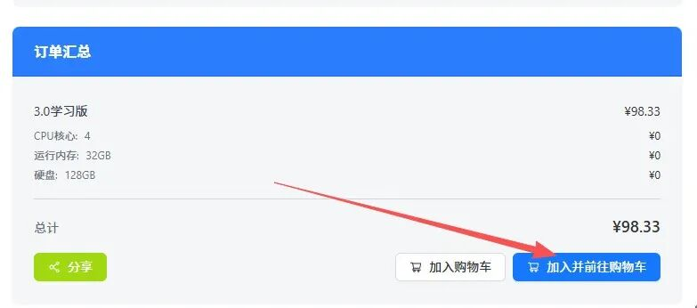
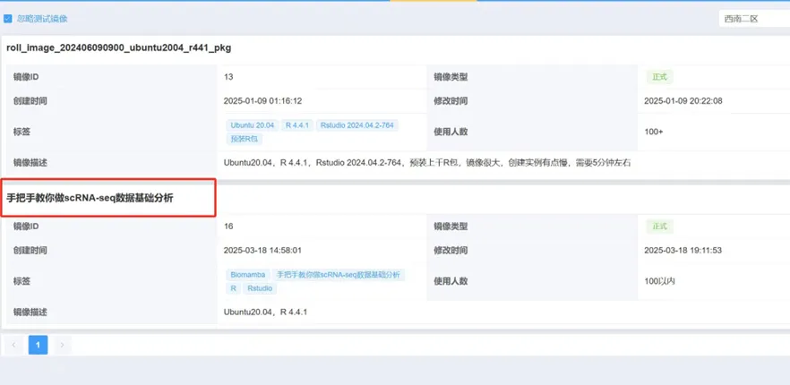
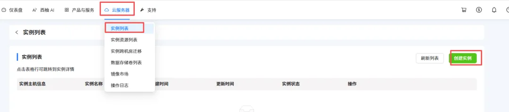
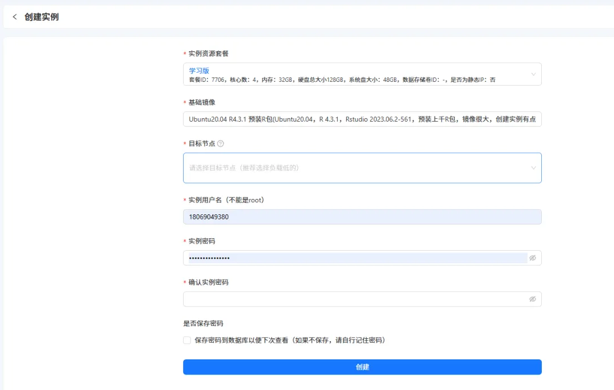
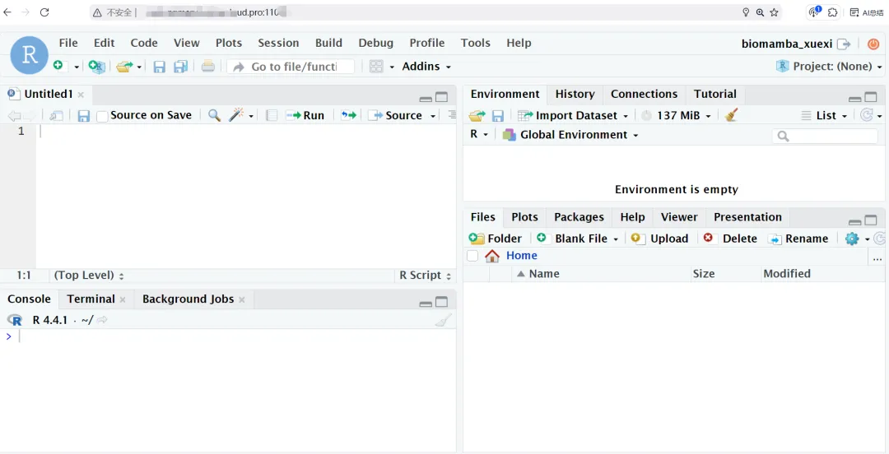

新增50个免费名额|学习版服务器使用权限
原文：https://mp.weixin.qq.com/s?__biz=MzAwMzIzOTk5OQ==&mid=2247532717&idx=2&sn=eb98e578098b9f432ea6ecbdc3c0d74b&chksm=9b3c39fdac4bb0eba77fcaaf208f1213d69769c5579188af6956c419894fc90f70b424ef616d#rd 合集：服务器

之前给大家用来练手的学习版由于机房升级一直没有上架，现在是时候回归啦。给大家上架了一批免费的 、32GB 、4线程 的服务器(使用时长两周)，配合我们的十小时学会Linux，应该足够你完成Linux的学习啦。每个月都会新增50个名额，正式使用版不限名额：足够支持你完成硕博生涯的生信环境。大家可以随时联系微信[Biomamba_zhushou]申请免费的服务器：
 大家可以根据视频来申请体验权限：
现在还有专属的单细胞数据分析镜像：
学习版权限申请图文流程：第一步 ，复制网址(https://biomamba.xiyoucloud.net/)至浏览器，注册账号实名认证。第二步 ，点击进入生信服务器列表，选择3.0学习版的"点击购买"，加入购物车：
大家可以根据视频来申请体验权限：
现在还有专属的单细胞数据分析镜像：
学习版权限申请图文流程：第一步 ，复制网址(https://biomamba.xiyoucloud.net/)至浏览器，注册账号实名认证。第二步 ，点击进入生信服务器列表，选择3.0学习版的"点击购买"，加入购物车：


第三步 ，输入并应用优惠码(联系文末领取)，查看价格是否变成0元
第四步 ，联系文末微信，发送账号/用户ID，我们为您激活服务器第五步 ，进入控制台创建实例选择西南二区

现额外添加了"手把手教你做scRNA-sseq基础分析"镜像，大家选择这个镜像就可以参加本次的课程啦~
获取"手把手教你做scRNA-sseq基础分析"镜像，请联系客服微信[Biomamba_zhushou]

创建服务器实例，设置账户和密码，获取IP和端口


设置好之后就可以用ssh正常远程连接啦： Rstudio-server也是可以正常使用的，大家可以愉快的学习R语言和单细胞：
Rstudio-server也是可以正常使用的，大家可以愉快的学习R语言和单细胞：



如何联系我们

 留一个领取资料、开箱即用的单细胞分析镜像的微信号[Biomamba_zhushou]，方便各位随时交流。同时我们也构建了交流群矩阵，欢迎大家入群讨论。
大家可以阅读完这几篇之后添加给生信入门初学者的小贴士
没有检索，就没有发言权
留一个领取资料、开箱即用的单细胞分析镜像的微信号[Biomamba_zhushou]，方便各位随时交流。同时我们也构建了交流群矩阵，欢迎大家入群讨论。
大家可以阅读完这几篇之后添加给生信入门初学者的小贴士
没有检索，就没有发言权
已有生信基地联系方式的同学无需重复添加
 您点的每个赞和在看，我都认真当成了喜欢
您点的每个赞和在看，我都认真当成了喜欢